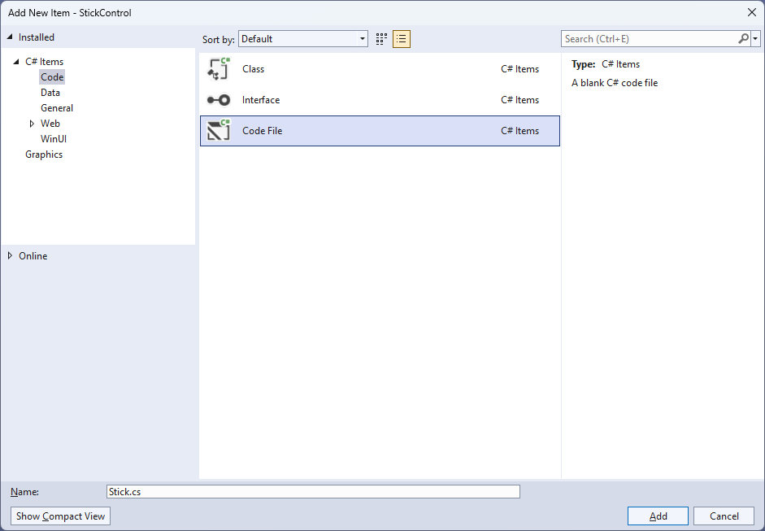
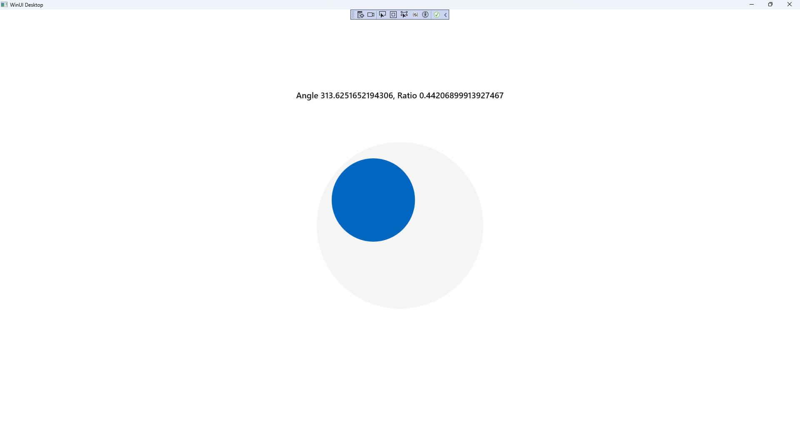

Stick Control
Learn creating a Directional Stick using Windows App SDK with this Tutorial
Stick Control shows how to create a Directional Stick that can be used for selecting an Angle and Ratio using Windows App SDK.
Step 1
Follow Setup and Start on how to get Setup and Install what you need for Visual Studio 2022 and Windows App SDK.


Step 2
Then in Visual Studio within Solution Explorer for the Solution, right click on the Project shown below the Solution and then select Add then New Item…

Step 3
Then in Add New Item from the C# Items list, select Code and then select Code File from the list next to this, then type in the name of Stick.cs and then Click on Add.

Step 4
Step 5
You will now be in the View for the Code of Stick.cs, within this type the following Code:
using Microsoft.UI;
using Microsoft.UI.Xaml;
using Microsoft.UI.Xaml.Controls;
using Microsoft.UI.Xaml.Data;
using Microsoft.UI.Xaml.Input;
using Microsoft.UI.Xaml.Media;
using Microsoft.UI.Xaml.Shapes;
using System;
namespace StickControl;
public class Stick : Grid
{
// Members & Event
// Dependency Properties
// Properties
// ToRadians, ToDegrees, SetMiddle, & GetCircle Methods
// Move Method
// Layout & Load Methods and Constructor
}
There are using statements for the User Control, a namespace for StickControl with an enum for the Directions
along with a class of Stick that will represent the User Control for the Directional Stick.
Step 6
Then in the namespace of StickControl in the class of Stick after the Comment
of // Members & Event type the following Members and Event:
private bool _capture;
private Ellipse _knob;
private Ellipse _face;
private double x = 0;
private double y = 0;
private double _m = 0;
private double _res = 0;
private double _width = 0;
private double _height = 0;
private double _alpha = 0;
private double _alphaM = 0;
private double _centreX = 0;
private double _centreY = 0;
private double _distance = 0;
private double _oldAlphaM = -999.0;
private double _oldDistance = -999.0;
public delegate void ValueChangedEventHandler(
object sender, double angle, double ratio);
public event ValueChangedEventHandler ValueChanged;
Members include Ellipses needed to represent the different directional parts of the Directional Stick and there is also a
delegate along with an event for when the Directional Stick is interacted with.
Step 7
While still in the namespace of StickControl in the class of Stick after the Comment
of // Dependency Properties type the following Dependency Properties:
public static readonly DependencyProperty RadiusProperty =
DependencyProperty.Register(nameof(Radius), typeof(int),
typeof(Stick), new PropertyMetadata(100));
public static readonly DependencyProperty KnobProperty =
DependencyProperty.Register(nameof(Knob), typeof(Brush),
typeof(Stick), new PropertyMetadata(new SolidColorBrush(Colors.Red)));
public static readonly DependencyProperty FaceProperty =
DependencyProperty.Register(nameof(Face), typeof(Brush),
typeof(Stick), new PropertyMetadata(new SolidColorBrush(Colors.Black)));
public static readonly DependencyProperty AngleProperty =
DependencyProperty.Register(nameof(Angle), typeof(double),
typeof(Stick), null);
public static readonly DependencyProperty RatioProperty =
DependencyProperty.Register(nameof(Ratio), typeof(double),
typeof(Stick), null);
public static readonly DependencyProperty SensitivityProperty =
DependencyProperty.Register(nameof(Sensitivity), typeof(double),
typeof(Stick), null);
There will also be some Errors as these refer to Properties that will be added in the next step.
These Dependency Properties refer to various Properties of the Directional Stick that can be customised for the User Control.
Step 8
While still in the namespace of StickControl in the class of Stick after the Comment
of // Properties type the following Properties:
public int Radius
{
get { return (int)GetValue(RadiusProperty); }
set { SetValue(RadiusProperty, value); Load(); }
}
public Brush Knob
{
get { return (Brush)GetValue(KnobProperty); }
set { SetValue(KnobProperty, value); }
}
public Brush Face
{
get { return (Brush)GetValue(FaceProperty); }
set { SetValue(FaceProperty, value); }
}
public double Angle
{
get { return (double)GetValue(AngleProperty); }
set { SetValue(AngleProperty, value); }
}
public double Ratio
{
get { return (double)GetValue(RatioProperty); }
set { SetValue(RatioProperty, value); }
}
public double Sensitivity
{
get { return (double)GetValue(SensitivityProperty); }
set { SetValue(SensitivityProperty, value); }
}
All previous Errors should now be resolved, however there will be just one for a Method of Load which will be resolved in a future
step but if you are getting any others check any previous steps to see if you have missed anything.
These Properties are for values for the User Control such as the Angle or Ratio values for the Directional Stick.
Step 9
While still in the namespace of StickControl in the class of Stick after the Comment
of // ToRadians, ToDegrees, SetMiddle, & GetCircle Methods type the following Methods:
private static double ToRadians(double angle) =>
Math.PI * angle / 180.0;
private static double ToDegrees(double angle) =>
angle * (180.0 / Math.PI);
private void SetMiddle()
{
_capture = false;
Canvas.SetLeft(_knob, (Width - _width) / 2);
Canvas.SetTop(_knob, (Height - _height) / 2);
_centreX = Width / 2;
_centreY = Height / 2;
}
private Ellipse GetCircle(double dimension, string path)
{
var circle = new Ellipse()
{
Height = dimension,
Width = dimension
};
circle.SetBinding(Shape.FillProperty, new Binding()
{
Source = this,
Path = new PropertyPath(path),
Mode = BindingMode.TwoWay
});
return circle;
}
The Methods of ToRadians and ToDegrees will perform the relevant conversions, SetMiddle will determine the centre point of
the Directional Stick and GetCircle will create an Ellipse with a Binding for the Fill.
Step 10
While still in the namespace of StickControl in the class of Stick after the Comment
of // Move Method type the following Method:
private void Move(PointerRoutedEventArgs e)
{
x = e.GetCurrentPoint(this).Position.X;
y = e.GetCurrentPoint(this).Position.Y;
_res = Math.Sqrt((x - _centreX) *
(x - _centreX) + (y - _centreY) * (y - _centreY));
_m = (y - _centreY) / (x - _centreX);
_alpha = ToDegrees(Math.Atan(_m) + Math.PI / 2);
if (x < _centreX)
_alpha += 180.0;
else if (x == _centreX && y <= _centreY)
_alpha = 0.0;
else if (x == _centreX)
_alpha = 180.0;
if (_res > Radius)
{
x = _centreX + Math.Cos(ToRadians(_alpha) - Math.PI / 2) * Radius;
y = _centreY + Math.Sin(ToRadians(_alpha) - Math.PI / 2) * Radius
* ((_alpha % 180.0 == 0.0) ? -1.0 : 1.0);
_res = Radius;
}
if (Math.Abs(_alpha - _alphaM) >= Sensitivity ||
Math.Abs(_distance * Radius - _res) >= Sensitivity)
{
_alphaM = _alpha;
_distance = _res / Radius;
}
if (_oldAlphaM != _alphaM ||
_oldDistance != _distance)
{
Angle = _alphaM;
Ratio = _distance;
_oldAlphaM = _alphaM;
_oldDistance = _distance;
ValueChanged?.Invoke(this, Angle, Ratio);
}
Canvas.SetLeft(_knob, x - _width / 2);
Canvas.SetTop(_knob, y - _height / 2);
}
The Method of Move will be used by the Directional Stick to determine the current Angle and Ratio along with raising the Event of ValueChanged with those values.
Step 11
While still in the namespace of StickControl in the class of Stick after the Comment
of // Layout & Load Methods and Constructor type the following Methods and Constructor:
private void Layout()
{
_knob = GetCircle(Radius, "Knob");
_face = GetCircle(Radius * 2, "Face");
_height = _knob.ActualHeight;
_width = _knob.ActualWidth;
Width = _width + Radius * 2;
Height = _height + Radius * 2;
SetMiddle();
PointerExited -= null;
PointerExited += (object sender, PointerRoutedEventArgs e) =>
SetMiddle();
_knob.PointerReleased += (object sender, PointerRoutedEventArgs e) =>
SetMiddle();
_knob.PointerPressed += (object sender, PointerRoutedEventArgs e) =>
_capture = true;
_knob.PointerMoved += (object sender, PointerRoutedEventArgs e) =>
{
if (_capture)
Move(e);
};
_knob.PointerExited += (object sender, PointerRoutedEventArgs e) =>
SetMiddle();
}
private void Load()
{
Layout();
Children.Clear();
Children.Add(_face);
var canvas = new Canvas()
{
Width = Width,
Height = Height
};
canvas.Children.Add(_knob);
Children.Add(canvas);
}
public Stick() => Load();
All Errors should now be resolved, if you continue to get them check any previous steps to see if you have missed anything.
The Constructor will be used to create the look-and-feel of the User Control and will use the Method of
Load which will use the Method of Layout which will capture if the User Control is being interacted with.
Step 12
Step 13
In the XAML for MainWindow.xaml there will be some XAML for a StackPanel, this should be Removed:
<StackPanel Orientation="Horizontal"
HorizontalAlignment="Center" VerticalAlignment="Center">
<Button x:Name="myButton" Click="myButton_Click">Click Me</Button>
</StackPanel>
Step 14
While still in the XAML for MainWindow.xaml above </Window>, type in the following XAML:
<StackPanel VerticalAlignment="Center" HorizontalAlignment="Center">
<TextBlock Name="Label" HorizontalAlignment="Center"
Style="{StaticResource SubtitleTextBlockStyle}"/>
<local:Stick Radius="200" Knob="{ThemeResource AccentButtonBackground}"
Face="WhiteSmoke" ValueChanged="ValueChanged"/>
</StackPanel>
This XAML contains a StackPanel including a TextBlock and the User Control of Stick with the Event of ValueChanged.
Step 15
Step 16
In the Code for MainWindow.xaml.cs there be a Method of myButton_Click(...) this should be Removed by removing the following:
private void myButton_Click(object sender, RoutedEventArgs e)
{
myButton.Content = "Clicked";
}
Step 17
Once myButton_Click(...) has been removed, within the Constructor of public MainWindow() { ... } and below the line of this.InitializeComponent(); type in the following Code:
private void ValueChanged(object sender, double angle, double ratio) =>
Label.Text = $"Angle {angle}, Ratio {ratio}";
The Method of ValueChanged will be used with Event Handler from the XAML to display the selected Angle and Ratio,
this Method uses Arrow Syntax with the => for an expression body which is useful when a Method only has one line.
Step 18
Step 19
Once running you will see the Stick Control displayed, then you can select and move the centre portion of the Directional Stick and can see the Angle around the centre, or the Ratio of the distance between the centre and the outside displayed.

Step 20